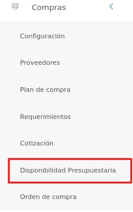
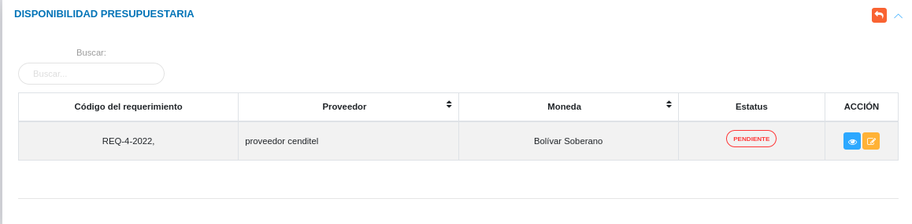
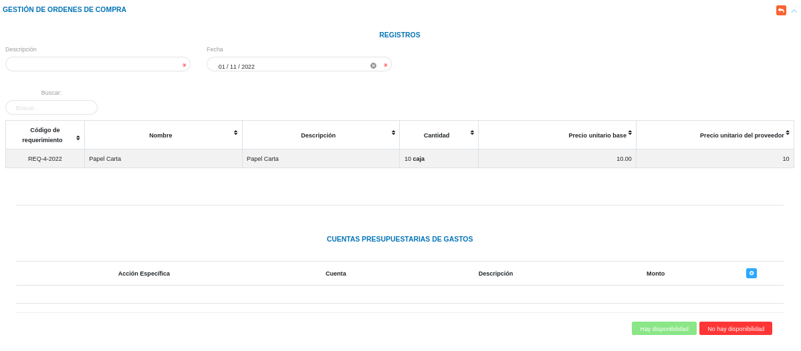
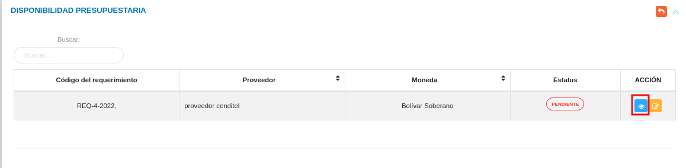
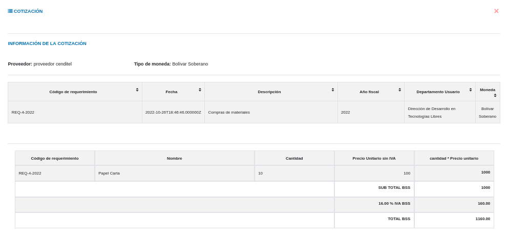
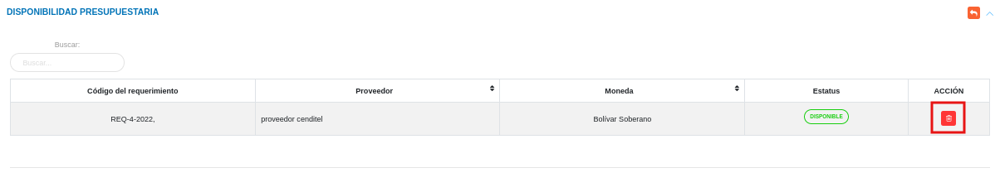

Gestión de Disponibilidad Presupuestaria

El usuario selecciona el módulo de Compras en el menú lateral de los módulos del sistema, ahí visualizara las opciones Configuración, Proveedores, Plan de compras, Requerimientos, Cotización, Disponibilidad Presupuestaria y Orden de compras, debiendo pulsar Disponibilidad Presupuestaria

Disponibilidad Presupuestaria
A través de esta sección se lleva a cabo la gestión de disponibilidad presupuestaria en el módulo de compras. Esta sección lista los registros de disponibilidad presupuestaria con información relevante sobre cada uno de ellos, desde la tabla de registros es posible crear un nuevo registro o gestionar cualquier registro de disponibilidad presupuestaria.

Registrar disponibilidad presupuestaria
- El usuario ingresará a la opción Disponibilidad Presupuestaria
- Haciendo uso del botón Solicitar Disponibilidad
 ubicado en la columna titulada Acción de un registro de disponibilidad presupuestaria que se desea solicitar.
ubicado en la columna titulada Acción de un registro de disponibilidad presupuestaria que se desea solicitar. - El sistema despliega un formulario de disponibilidad presupuestaria para completar los datos del mismo.
- Complete el formulario de disponibilidad presupuestaria. Tenga en consideración completar los campos obligatorios que son requeridos para el registro de una disponibilidad presupuestaria.
Para agregar una cuenta presupuestaria acceda a Presupuesto > Configuración(Proyectos y Acciones Especificas) > Formulación.
- Presione el botón Guardar
 para registrar los cambios efectuados.
para registrar los cambios efectuados. - Presione el botón Cancelar
 para cancelar registro y regresar a la ruta anterior.
para cancelar registro y regresar a la ruta anterior. - Presione el botón Borrar
 para eliminar datos del formulario.
para eliminar datos del formulario. - Si desea recibir ayuda guiada presione el botón
 .
. - Para retornar a la ruta anterior presione el botón
 .
.
Gestionar disponibilidad presupuestaria
La gestión de plan de compras se lleva a cabo a través del apartado Disponibilidad Presupuestaria.
- Para acceder a esta sección debe dirigirse a Compras y ubicarse en la sección Disponibilidad Presupuestaria apartado Disponibilidad Presupuestaria (ver Figura 60).
A través del apartado Disponibilidad Presupuestaria se listan los registros de Disponibilidad Presupuestaria en una tabla.
Desde este apartado se pueden llevar a cabo las siguientes acciones:
- Registrar disponibilidad presupuestaria.
- Consultar registros.
- Eliminar registros.
Registrar disponibilidad presupuestaria
- Presione el botón Solicitar Disponibilidad
 ubicado en ubicado en la columna titulada Acción de un registro de disponibilidad presupuestaria que se desea solicitar.
ubicado en ubicado en la columna titulada Acción de un registro de disponibilidad presupuestaria que se desea solicitar. - A continuación complete el formulario siguiendo los pasos descritos en el apartado Registrar disponibilidad presupuestaria.
- Presione el botón Guardar para registrar los cambios efectuados.

Consultar registros
- Presione el botón Consultar registro ubicado en la columna titulada Acción de un registro de disponibilidad presupuestaria que se prefiere consultar.

- A continuación el sistema despliega una sección donde se describen los datos de la dispobnibilidad presupuestaria seleccionada.

Eliminar registros
- Presione el botón Eliminar registro
 ubicado en la columna titulada Acción del registro de disponibilidad presupuestaria que se desee seleccionar para eliminar del sistema.
ubicado en la columna titulada Acción del registro de disponibilidad presupuestaria que se desee seleccionar para eliminar del sistema.

- Confirme que esta seguro de eliminar el registro seleccionado a través de la ventana emergente, mediante el botón Confirmar y efectue los cambios.